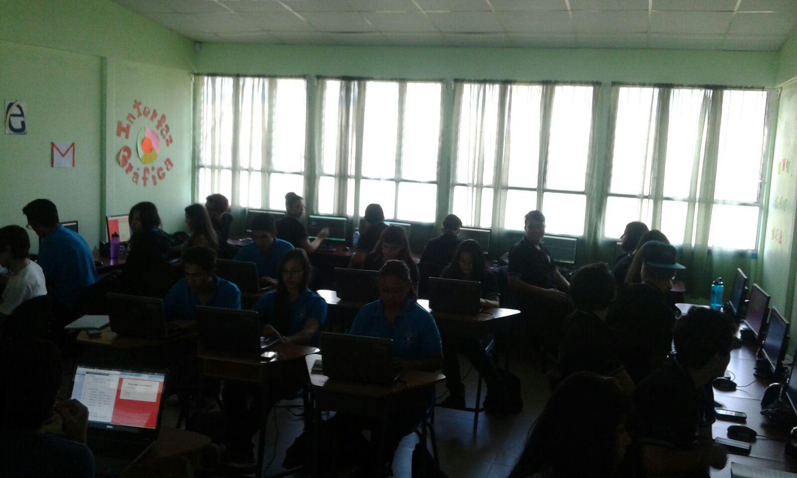

Sobre el proyecto
Este proyecto nace como una idea de mi compañero Melvin Sandoval para contribuir un poco con su comunidad.
Actualmente estamos trabajando con chicos del CTP de San Rafael de Oreamuno, dando charlas inductorias sobre algunos temas que les podrían reforzar los conocimientos adquiridos durante su especialidad.
Estamos trabajando con dos grupos:
- Décimo año - Java, Orientación a Objetos
- Undécimo año - HTML5,CSS3,Javascript
